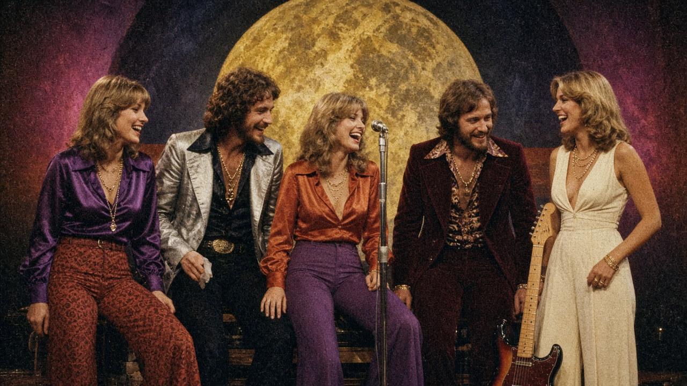
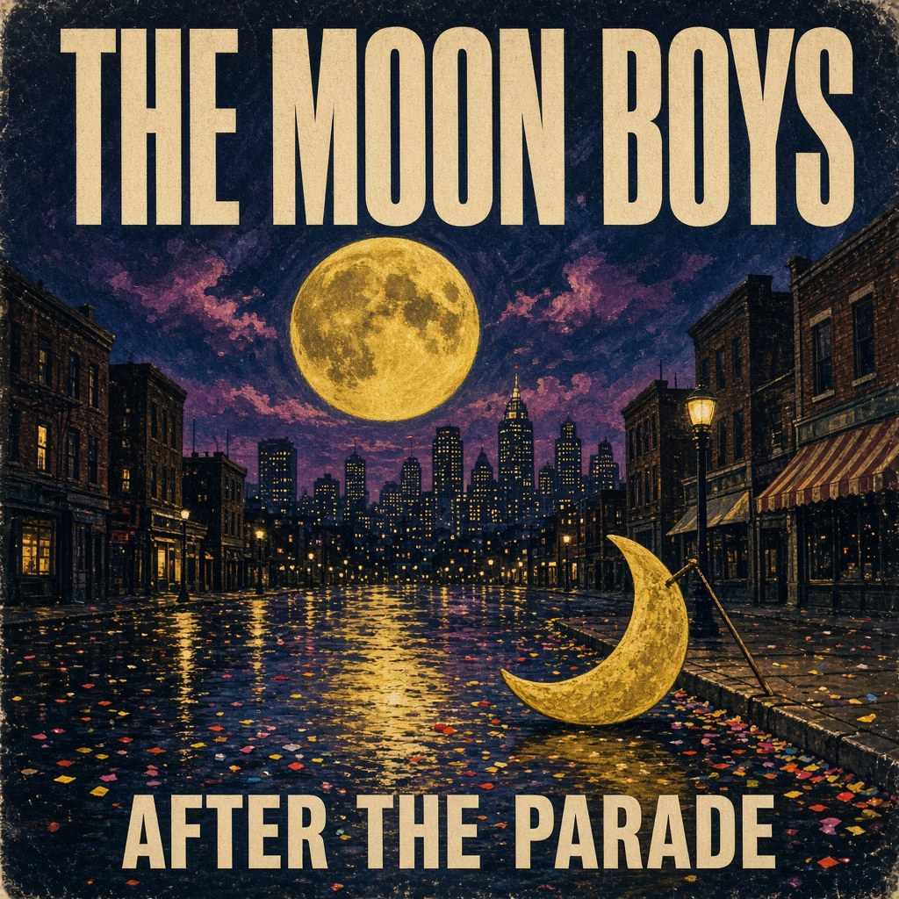
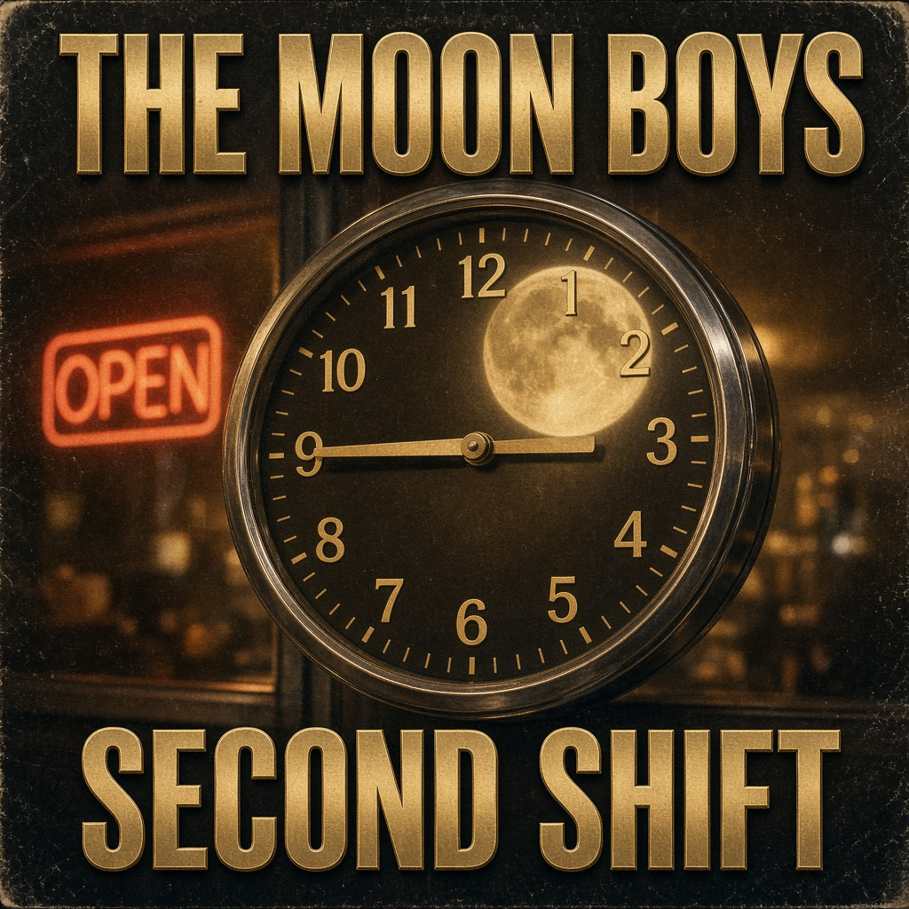
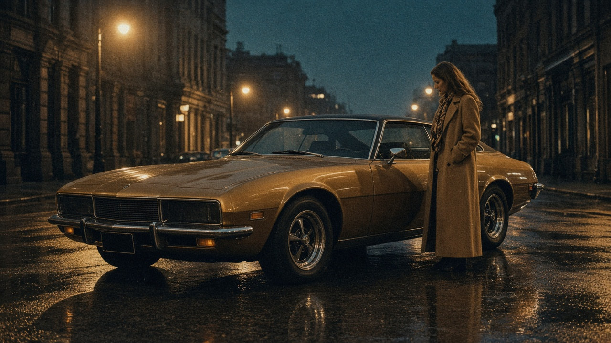
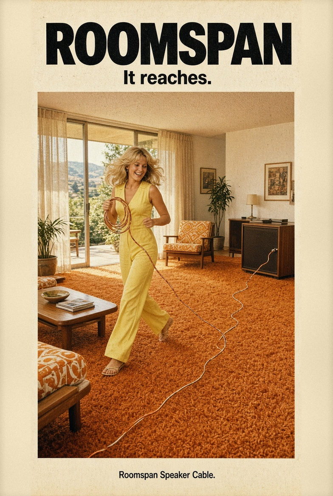
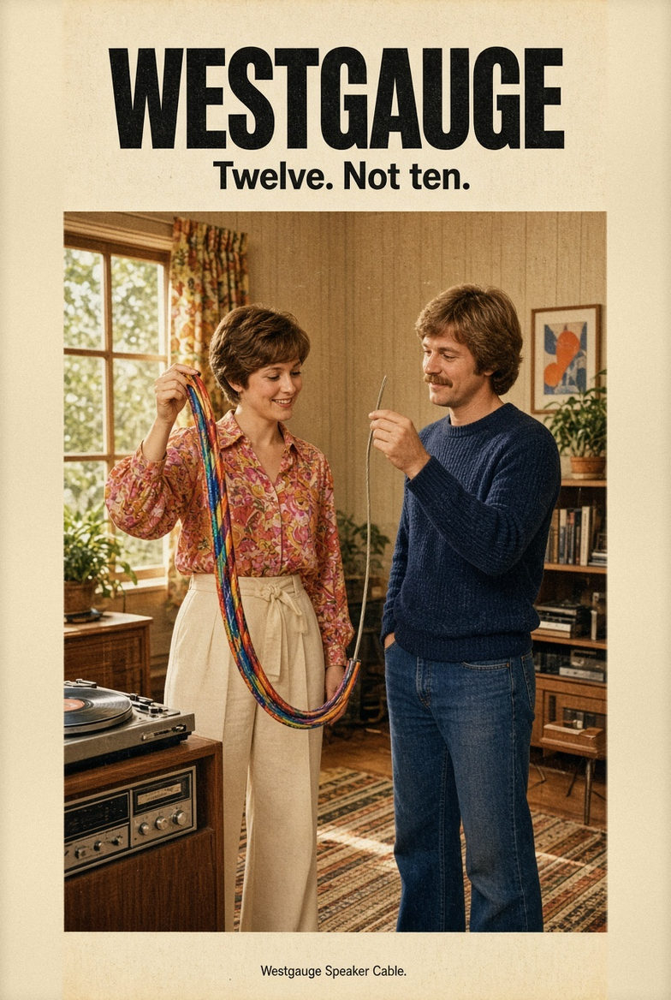
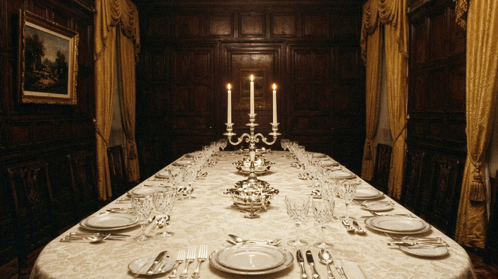
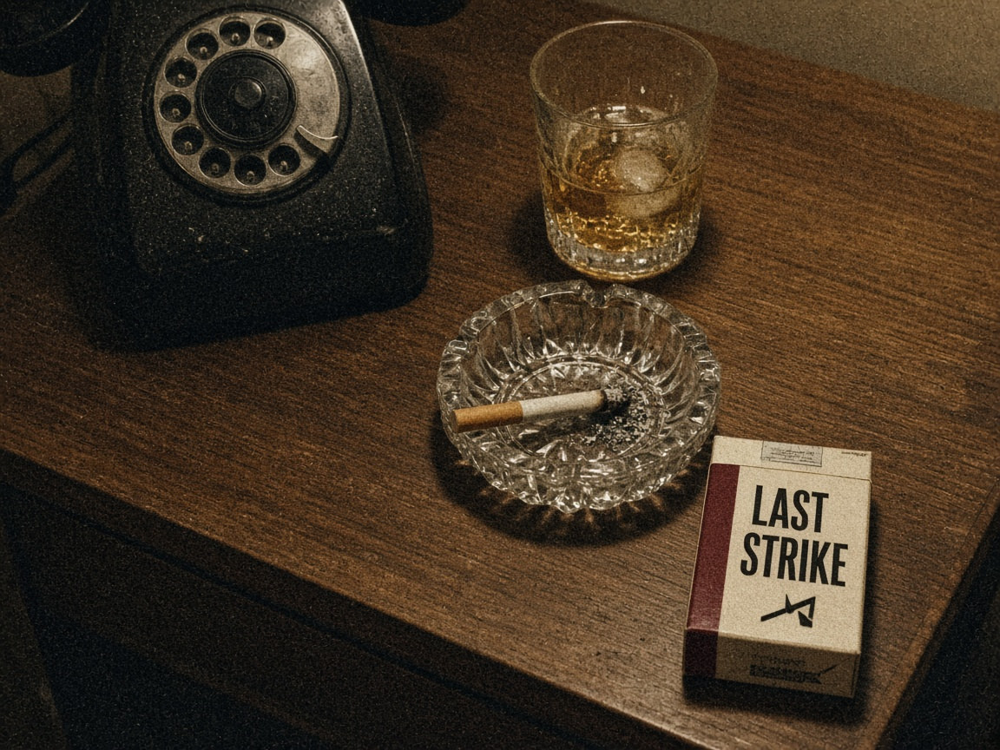
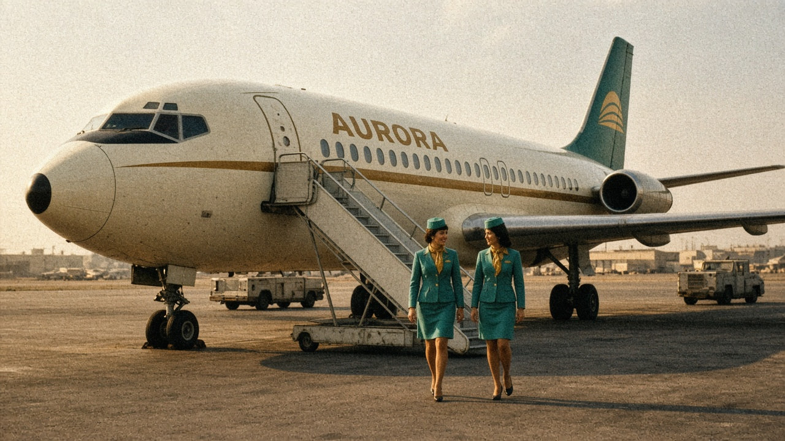
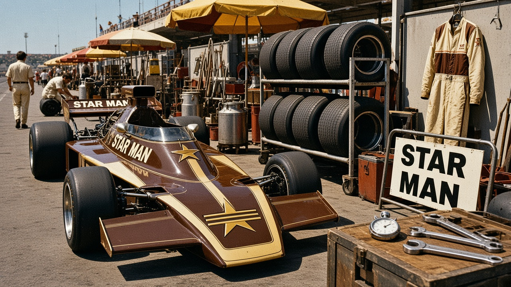

Recording artists · 1973–1978
The Moon Boys
We did the jackets. They did the rest, usually after two in the morning. The second album arrived already late. We left it that way.


Advertising the future!
The accounts that pay the rent
Invented brands, real hours. The Moon Boys paid in jackets. We do not name the ones who asked us to treat a toaster like an Ace story.

Recording artists · 1973–1978
We did the jackets. They did the rest, usually after two in the morning. The second album arrived already late. We left it that way.



Motorcars · The Hartwick Twelve, 1974
A long-hood coupé for people who already have somewhere to be. The client asked for more chrome. We took some off.
Hi-fi · The work that pays the rent
Orbit, Goldstrand, Roomspan and Westgauge. One payoff each.

Orbit Reel Co. · Golden Starburst, 1974
One payoff. The client asked if the star could be larger. We said it was already the point.

Goldstrand Cable
Speaker cable, sold as jewellery. The client asked for silver. We said no. Gold was the name.

Roomspan Speaker Cable
A comically long run of cable. Merchandising asked for a shorter version. We printed the long one.

Westgauge Speaker Cable
A thickness argument that became a campaign. Research said not to mention the number. We put it in the headline.

Cat People · cats of independent means
Frank has been on the tin since 1958. These days he works less.

Silversmiths · twelve place settings
A formal service. We photographed the forks and left the guests out of it.

Cigarettes · a period account
Also, frequently, the first. The last agency had used a sunset. We used the ashtray.

Air travel · transcontinental, when convenient
A cream fuselage, a gold stripe, a timetable that was more of a suggestion. The delays were not.

Formula 1 · Equipe Star Man, 1974–
The studio’s only hobby that costs more than the ashtrays. We have never finished a race. We have finished several lunches.

The pits, 1975. The board was ours. The finishing position was not.
The Moon Boys, Hartwick, Orbit, Goldstrand, Roomspan, Westgauge, Cat People, Westmere Silver, Last Strike, Aurora Air and Star Man Racing are invented names. Last Strike is not a real tobacco product. We show no likeness of real musicians or drivers.